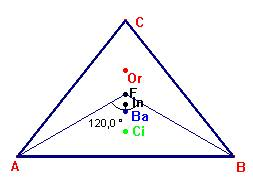

El punto de Fermat, F, es tal que, los segmentos que lo unen con los vértices del triángulo forman entre si 120º.
|
El
punto de Fermat.
En un triángulo cualquiera que tenga sus tres ángulos agudos se traza, sobre
cada uno de sus lados, un triángulo equilátero hacia fuera del triángulo,como
indica la figura. Se une A con H, B con J y C con K. Estas tres rectas
concurren en un punto F, desde el que se ve cada lado con un ángulo de 120º.
Además, AH = BJ = CK. |
|
Una de las posibles construcciones es la siguiente. Sobre cada lado del triángulo se traza un triángulo equilátero. La intersección de los segmentos AA’, BB’ y CC’ determina el punto de Fermat. ( idéntica construcción a la del teorema de Napoleón). El punto de Fermat, F, es tal que, los segmentos que lo unen con los vértices del triángulo forman entre si 120º. |
Es común encontrar en textos, que esta construcción es válida para triángulos acutángulos, lo cual es cierto, pero también es válida para triángulos con ángulo menor de 120º. Es a partir de 120º, donde con esta construcción, F está fuera del triángulo, y obviamente no verifica que la suma de distancias a los vértices sea mínima. Para ángulos mayores o iguales a 120º, el punto de distancia mínima a los vértices sería el propio vértice.
En un triángulo isósceles, el punto de Fermat pertenece a la recta de Euler.
Sea un triángulo isósceles, AB fijo y variamos C a lo largo de la mediatriz de AB. El punto de Fermat será aquel cuyos radios FA y FB formen 120º , y como A y B son fijos, el punto de Fermat permanece invariante al modificar C. El Punto de Fermat “no se mueve”al variar la altura en un triangulo isósceles.
|  |
Si en vez de unir 3 puntos mediante camino mínimo, queremos unir 4, ¿cuál será este camino?
Supongamos que los cuatro puntos forman un cuadrado. Las primeras soluciones que se nos pueden ocurrir son las siguientes. Vemos que la segunda es mejor que la primera.
La pregunta es obvia. ¿Se puede mejorar este trazado?
La resolución hecha para el triángulo nos sirve. En efecto, basta con hacer mínimo el camino que une B, D, y O. Esto es, buscar el punto de Fermat de este triángulo, y por simetría, la solución es:
El camino mínimo es el reprentado, siendo F y F’ los puntos de Fermat de los triangulos BDO y ACO respectivamente.
Como ya sabíamos, el camino minimo va ligado a un ángulo de 120º. ¿Cómo distribuiríamos n puntos en el plano, de forma que el camino que los une sea mínimo? Facilmente podemos deducir que formando hexágonos, (ver la figura anterior) cosa que las abejas aplican de forma natural al construir sus celdillas.
Si las ciudades A, B, C, D forman un paralelogramo, nos sirve esta construcción para determinar la carretera de camino mínimo que las une.
 |